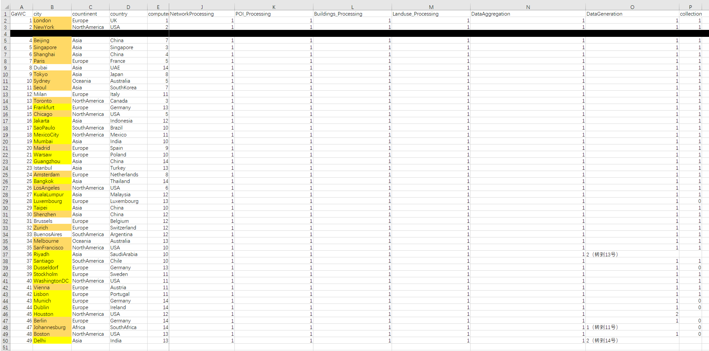

杨俊杰-个人作品与项目经历展示
声明：
· 本文中提到的成果皆为本人亲手/主导完成，网页内容系本人独立制作；
· 点击折叠列表 “▶” 可查看作品图片；
· 可能涉及公司/学院机密的部分数据/内容已做打码处理，仅展示思考过程和大致成果；
· 下列成果能够展示在这里，离不开导师/师兄师姐/mentor们的信任和悉心指导，在此向他们表达由衷的感谢！
（一）题库AI解析产品数据运营 | 猿辅导（北京）
时间
2024.12-2025.03
项目描述
【痛点】
K12题库包含十万量级无解析题目，人工解析全覆盖难以实现；
【工作目标】
产品、运营多部门合作，调整培训猿辅导专属题目解析大模型，解析结果上线至在线题库中，逐步实现生态内所有产品的题目解析全覆盖。
【工作内容及成果】
● 编写SQL自动化抽样脚本，支撑每轮万级题目的AB测试；
● 针对题目解析模型的表现评价需求，构建评价指标体系，设计3类15项关键指标，搭建在线数据监测看板；
● 负责3科目共12轮AB测试，同步跟进分析指标异动原因并提出针对性策略，驱动模型参数和Prompt迭代，推动模型准确率从76%提升至95%，加速功能上线；
● 联动对接产品部门和测评教师，建立“需求-模型微调-测试-数据分析”闭环，迭代效率提升30%。
成果展示（涉及数据安全，部分产品核心数据信息已打码）
工作状态展示


（二）面向城市形态研究的全球城市OSM路网自适应简化路径 | 导师团队
时间
2023.10-2025.01
主要内容
【痛点】
OSM数据难以直接应用于城市道路组合模式研究；
【技术目标】
协助课题博士，用Python脚本实现“OSM数据→图数据”自动转化：
● 获取和预处理全球30个主要城市超1000万条OSM数据，撰写操作手册；
● 负责将已有脚本转化为流程图，并完成部分流程的专利核心内容撰写；
● 脚本落地运行：试运行脚本→检验结果→修正零星问题→大范围实验。
成果与业绩
● 整体可减少约90%的OSM道路数据冗余；
● 被导师团队采纳为标准化工具；
● 目前专利已通过学校审核，送交审查。
成果展示
python代码节选

操作手册节选：用于辅助师弟师妹快速上手

运行结果可视化示例（QGIS）

脚本执行在线监测表格

（三）基于地名景观的圩田村落空间特征研究 | 硕士论文
时间
2024.10至今
主要工作
个人硕士论文，自行编写python脚本，对地名数据进行处理、分析。自主编写脚本扒取各大电子地图地名信息，根据语义及空间关联构建自动化数据清洗模型，准确率可达90%；使用文本分析方法提取和归类超3个地级市的地名描述与空间特征信息，减少超约40小时重复性工作。
代码节选
API扒取
import json import os import requests import time from requests.adapters import HTTPAdapter from urllib3.util.retry import Retry def get_place_details(place_id): """获取地名详细信息""" url = "https://dmfw.mca.gov.cn/9095/stname/detailsPub" headers = { "accept": "application/json, text/javascript, */*; q=0.01", "accept-language": "zh-CN,zh;q=0.9,en;q=0.8", "content-type": "application/x-www-form-urlencoded; charset=UTF-8", "origin": "https://dmfw.mca.gov.cn", "referer": "https://dmfw.mca.gov.cn/search.html", "user-agent": "Mozilla/5.0 (Windows NT 10.0; Win64; x64) AppleWebKit/537.36 (KHTML, like Gecko) Chrome/131.0.0.0 Safari/537.36", "x-requested-with": "XMLHttpRequest", "sec-ch-ua": '"Google Chrome";v="131", "Chromium";v="131", "Not_A Brand";v="24"', "sec-ch-ua-mobile": "?0", "sec-ch-ua-platform": "Windows", "sec-fetch-dest": "empty", "sec-fetch-mode": "cors", "sec-fetch-site": "same-origin" } cookies = { "Hm_lvt_c6ce545a4208392367e27a0dc67c5d66": "1734155765", "HMACCOUNT": "156CF24BB5D0DABE" } # 使用 form-encoded 格式 data = { "id": place_id } # 创建会话对象并配置重试策略 session = requests.Session() max_retries = 3 retry_delay = 1 retry_strategy = Retry( total=max_retries, backoff_factor=retry_delay, status_forcelist=[502, 503, 504, 429] # 需要重试的状态码 ) adapter = HTTPAdapter(max_retries=retry_strategy) session.mount("http://", adapter) session.mount("https://", adapter) for attempt in range(max_retries): try: response = session.post(url, data=data, headers=headers, cookies=cookies) if response.status_code == 200: return response.json() elif response.status_code == 400: print(f"Invalid request for ID {place_id}: {response.text}") return None elif response.status_code == 502: print(f"Gateway error (502) for ID {place_id}, attempt {attempt + 1} of {max_retries}") if attempt < max_retries - 1: # 如果不是最后一次尝试 time.sleep(retry_delay * (attempt + 1)) # 递增延迟 continue else: print(f"Failed to get details for ID {place_id} after {max_retries} attempts") return None else: print(f"Error getting details for ID {place_id}: {response.status_code}") return None except Exception as e: print(f"Exception while getting details for ID {place_id} on attempt {attempt + 1}: {str(e)}") if attempt < max_retries - 1: time.sleep(retry_delay * (attempt + 1)) continue return None return None
地理数据处理
import json import os import geopandas as gpd from shapely.geometry import Point from urllib3.util.retry import Retry ########################################################################## def process_geometry(gdm): """处理几何数据""" if gdm is None: return None # try: # if gdm["type"].lower() == "multipoint": # return Point(gdm["coordinates"][0]) # except Exception as e: # print(f"Error processing geometry: {str(e)}") # return None # return None try: if gdm["type"].lower() == "multipoint": # Take the first coordinate pair and create a Point coords = gdm["coordinates"][0] if isinstance(coords[0], list): # If coordinates are nested coords = coords[0] return Point(coords) elif gdm["type"].lower() == "point": return Point(gdm["coordinates"]) else: print(f"Unsupported geometry type: {gdm['type']}") return None except Exception as e: print(f"Error processing geometry: {str(e)}") return None def convert_to_shapefile(json_data, output_path): """将JSON转换为Shapefile""" features = [] for item in json_data["data"]: geom = process_geometry(item["gdm"]) if geom: # 创建一个新的字典，包含所有字段，但确保字段名不超过10个字符 feature_data = { "id": item["id"], "plc_code": item["place_code"], "std_name": item["standard_name"], "spell": item["roman_alphabet_spelling"], "eth_write": item["ethnic_minorities_writing"], "plc_type": item["place_type"], "type_code": item["place_type_code"], "province": item["province_name"], "city": item["city_name"], "area": item["area_name"], "area_code": item["area"], "city_code": item["city"], "prov_code": item["province"], "geometry": geom } for key, value in item.items(): if key not in ["id", "place_code", "standard_name", "roman_alphabet_spelling", "ethnic_minorities_writing", "place_type", "place_type_code", "province_name", "city_name", "area_name", "area", "city", "province", "gdm", "pdm", "geometry"]: # 截断字段名以确保不超过10个字符 short_key = key[:10] feature_data[short_key] = value features.append(feature_data) if features: gdf = gpd.GeoDataFrame(features) gdf.crs = "EPSG:4326" try: # Add driver specification and geometry type gdf.to_file(output_path, encoding='utf-8', driver='ESRI Shapefile', geometry_type='Point') print(f"Successfully saved shapefile with {len(gdf.columns)} fields") print("Fields included:", list(gdf.columns)) except Exception as e: print(f"Error saving shapefile: {str(e)}")
文本分析
import os import pandas as pd import jieba import re ########################################################################## def earliest_age(index, place_name, place_mean, place_hist, place_orig, form_age): """ 根据文本描述获取地名的最早文献记载时间，注意最早记载时间不一定为村落形成时间。 """ key_list_1 = ["时期","期间", "年代", "年间", "年", "很久"] key_list_2 = list(time_dict.keys()) key_list = key_list_1 + key_list_2 split_dict = {} result_dict = dict() num_not_found = 0 # for i in range(10): for i in range(len(index)): # 已有建成时间记载的，按建成时间为最早记载时间，跳过计算 if pd.notna(form_age[i]): result_dict[index[i]] = [place_name[i], form_age[i]] # print(f"【{place_name[i]}】最早记载时间即形成时间：{form_age[i]}") continue # 整合所有描述文本 text = place_mean[i] + place_hist[i] + place_orig[i] split_list = list() split_list.append(text) earliest_list = list() # 先提取年份等信息 for key_word in key_list_1: res_list = list() for te in split_list: try: new_list = te.split(key_word) except Exception as e: print(f"无关键词{key_word}, {e}") new_list = list(te) res_list.extend(new_list) split_list = res_list # 提取分割后每个字符串到上一个标点的所有文本 for tex in split_list[:-2]: list_1 = list() list_1.append(tex) # print("tex: ", list_1) try: for mar in ['。', '，', '；']: list_2 = [] for j in list_1: ex = re.split(mar, j)[-1].lstrip("，").lstrip("。").lstrip("原") list_2.append(ex) list_1 = list_2 # 如果是数字，则直接输出 exa = list_1[0] if exa.isdigit(): age = exa # print(f"{age}") # 如果是汉字字符，则进入time_dict搜索对应值填入；如果没有找到，则沿用原值 elif exa in time_dict.keys(): try: age = time_dict[exa] # print(f"{age}") except Exception as e: age = exa if e: print(f"未在time_dict中找到{exa}") # 如果都没找到，显示未找到，进入下一个循环 else: # print("not found") continue # 将获得的信息录入待比较列表 earliest_list.append(age) except Exception as e: print(f"{e}") # 列表去重 earliest_list = list(set(earliest_list)) # print(earliest_list) # 多结果处理 if len(earliest_list) > 1: int_list = list() for age in earliest_list: if age.isdigit(): # 如果提取到的是简化的两位数年份 if int(age) < 100: age = '19' + age int_list.append(int(age)) else: int_list.append(order_dict[age]) earliest_result = str(min(int_list)) # print(earliest_result) # 单结果处理 elif len(earliest_list) == 1: earliest_result = earliest_list[0] # print(earliest_result) # 无结果处理 else: # print(f"【{place_name[i]}】 not found") num_not_found += 1 continue # print(earliest_result) result_dict[index[i]] = [place_name[i], earliest_result] split_dict[i] = split_list print(f"{num_not_found}个要素无结果。") return result_dict ########################################################################## # 读取文件 book1 = pd.read_excel('origin_details.xlsx') book2 = pd.read_excel('origin_details_form_age.xlsx') # 提取特定列 ID = book1['id'] name = book1['std_name'] mean = book1['place_mean'] history = book1['place_hist'] origin = book1['place_orig'] # 查询最早记载年代 result_earliest = earliest_age(book2['id'], book2['std_name'], book2['place_mean'], book2['place_hist'], book2['place_orig'], book2['form_age']) # 保存查询结果 output('origin_details_form_age.xlsx', 'earliest_age', result_earliest)
（四）学院新媒体运营 | 东南大学建筑学院
时间
2019.03-2024.09
主要工作
● 负责部分推送内容策划、内容撰写、编辑发布，累计发布100余篇推文；
● 通过公众号后台数据阅读量，优化推送时间（锁定周二/五晚8点），打开率提升约30% ；
● 编辑校党委H5线上展馆，阅读量超3000（超平均数据5倍），内容模版被5个兄弟学院复用；
● 从小红书选取南京“Citywalk”热点地区，策划党建主题的“红色漫步”活动。负责相关文创设计制作、物料统筹及部分带队工作，获评学院年度优秀党日活动。
成果和荣誉
H5线上展馆获得年度校级优秀党日活动，获评年度优秀党员。
成果展示

{kind=link}
{kind=link}
{kind=link}
{kind=link}
{kind=link}
{kind=link}
{kind=link}
{kind=link}
{kind=link}
{kind=link}